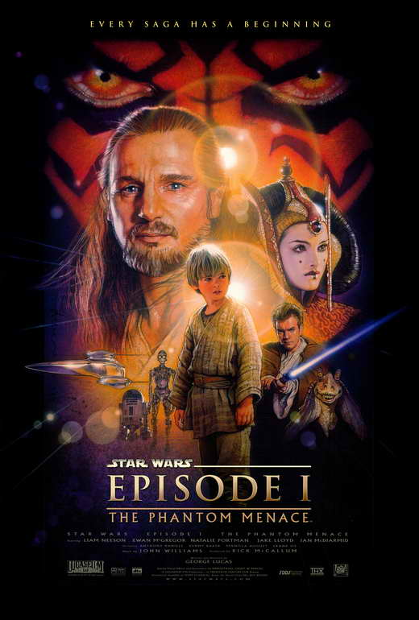

Эпизод I: Скрытая угроза
«Звёздные войны. Эпизод I: Скрытая угроза» (англ. Star Wars Episode I: The Phantom Menace) — эпический приключенческий фильм в жанре космическая опера, снятый Джорджем Лукасом. Это четвёртый фильм, выпущенный в рамках киносаги «Звёздные войны», выступающий первой частью трилогии-приквела и первым фильмом в саге с хронологической точки зрения. Кроме того, это четвёртая полнометражная картина Лукаса, который выпустил её после своего 22-летнего перерыва в режиссуре, со времен работы над своим предыдущим фильмом «Звёздные войны. Эпизод IV: Новая надежда» (1977).
Рыцарей-джедаев Квай-Гон Джинна и его падавана Оби-Ван Кеноби назначают послами для урегулирования разросшегося конфликта между Торговой федерацией и планетой Набу… Однако переговорам не суждено состояться — владыка ситхов приказывает лидерам Федерации уничтожить послов и приступить к оккупации Набу. Избежав смерти, джедаи вместе с королевой Набу Падме Амидалой сбегают с планеты в надежде добраться до столицы мира планеты-города Корусанта и добиться там правды, выступив перед сенатом республики. По пути они вынуждены остановиться на пустынной планете Татуин. Здесь джедаи обнаруживают необычного мальчика-раба по имени Энакин Скайуокер, в котором необычайно мощна Сила. Джедаи забирают мальчика с собой, чтобы обучить искусству Светлой стороны Силы. Вскоре ситуация обостряется, когда джедаи узнают, что считавшиеся побеждёнными раз и навсегда ситхи возвращаются. Не получив поддержки от сената, королева Падме с горсткой людей возвращается на Набу, где в ходе дерзкой атаки ей удаётся пленить лидеров Федерации.